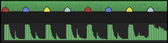
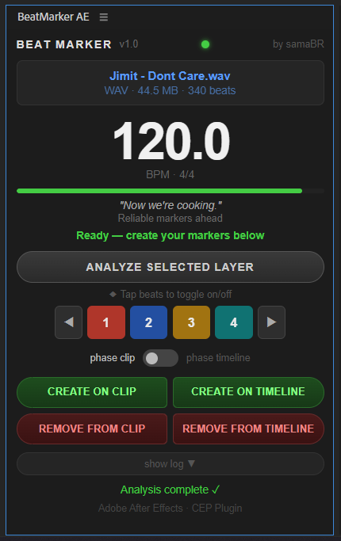

Auto-detects BPM and places colored markers on your audio layers. Cut to the beat — automatically.
No subscription. No account. No dependencies.
SUPPORTS .MP3 and .WAV files


Built by an editor, for editors. One click to analyze, one click to mark.
Automatically detects tempo from any WAV or MP3 audio layer. No manual tapping, no guessing.
Red, Blue, Yellow and Teal — one unique color per beat position. Navigate your timeline at a glance.
See how reliable the detection was before committing. Green means rock solid. Red means check manually.
Toggle which beats to mark. Just the downbeat? Only 1 and 3? Your call — tap to toggle.
Grid landed off by one beat? Shift the phase without re-analyzing. Minimal flicker thanks to a differential update algorithm.
Full UI in English and Portuguese (PT-BR). Language detected automatically from your system.
Four unique colors — one per beat position. Instantly readable on both clip and timeline.
The strongest beat of the bar. Your primary cut point.
Where the snare hits. The pulse that drives the groove.
Mid-bar emphasis. Great for secondary cut points and transitions.
Leads back to the downbeat. Perfect for anticipation cuts.
Open a composition with an audio layer (WAV or MP3). Select it or let the plugin find it automatically.
Click Analyze. BeatMarker AE detects the BPM and maps every beat in the file.
Toggle which beats to mark. Shift the phase if the grid is off. Pick Clip or Timeline as your target.
Click Create. Colored markers appear instantly — on the clip layer or on the composition timeline.
Markers are placed directly on the audio layer track. Stays with the layer wherever it goes in the composition.
Markers are placed on the composition bar — separate from any layer. No interference with layer dragging.
Download the .zip, extract it, right-click instalar.bat and run as Administrator. Done.